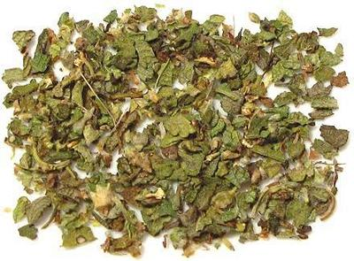
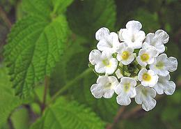

Mexican Oregano

[Orégano Cimmaron, Scented Lippia, Scented Matgrass;
Lippia graveolens (Verbina family)]
This shrub, native to the US Southwest, through Mexico and as far
south as Nicaragua, is an important culinary herb in the cuisines
of Mexico and Central America. It is also used in the US Southwest,
but is still a bit difficult to find here in Los Angeles.
Some related herbs, particularly Lippia alba (White Lippia)
and Lippia palmeri are similarly used.
More on Verbinas.
More on Herbs.

Buying:
While possibly more available in Arizona or
New Mexico, this herb is very difficult to find in Los Angeles, and
probably impossible in most regions. It is, however, fairly available
on-line, but shop for a good price. Always buy in leaf form and grind
it yourself, as it is much more durable than pre-ground.
Photo by Dick Culbert distributed under license Creative
Commons
Attribution 2.0 Generic.
Storing:
In a sealed container with as little air
space as practical, kept in a cool place and away from direct sunlight,
this herb should last at least a year, in leaf form. Half that or less
if powdered.
Substitute:
To me, the Mexican oregano tastes more minty
than Mediterranean oregano, so perhaps just a touch of dried mint leaf
with the oregano leaf.
vb_mexoregz 150112 - www.clovegarden.com
©Andrew Grygus - agryg@clovegaden.com - Photos on this
page not otherwise credited are © cg1 -
Linking to and non-commercial use of this page permitted